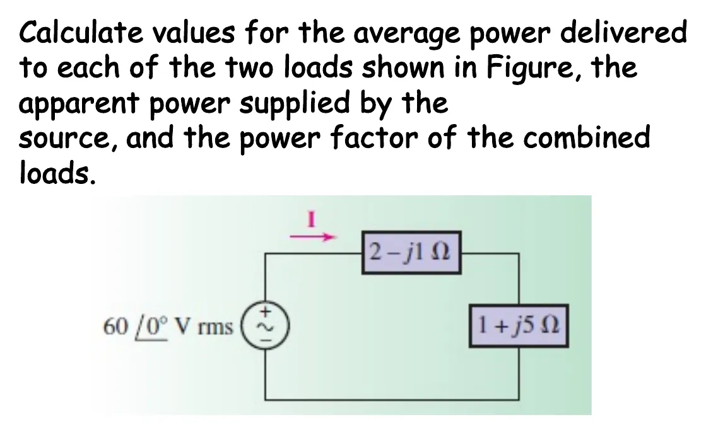
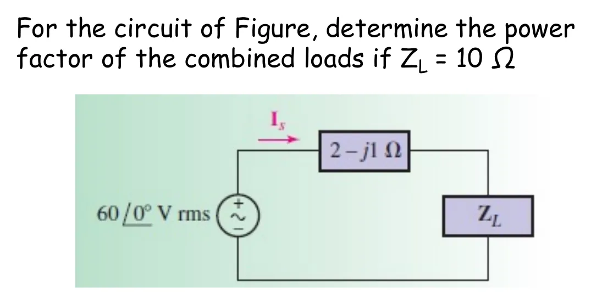
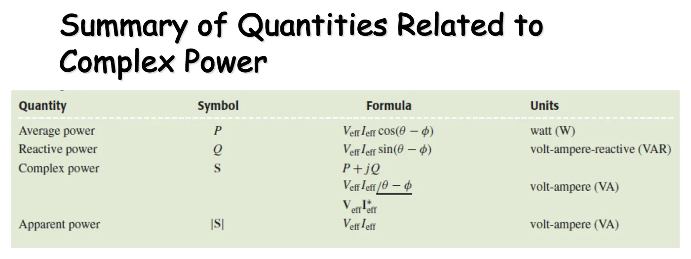

สามเหลี่ยมกำลังและตัวประกอบกำลัง The power triangle and power factor — PF = P/|S| = cos(θ − φ)
The power triangle and power factor PF = P/|S| = cos(θ − φ)
กำลังเชิงซ้อน \(\mathbf{S} = P + jQ\) วาดเป็นลูกศรบนระนาบได้ ส่วนจริง \(P\) อยู่แนวนอน ส่วนจินตภาพ \(Q\) อยู่แนวตั้ง ลูกศรจึงเป็นด้านตรงข้ามมุมฉากของสามเหลี่ยมกำลัง (สไลด์หน้า 11) รู้สองค่าก็หาค่าที่สามได้ อัตราส่วน \(P/|\mathbf{S}|\) คือตัวประกอบกำลัง (power factor, PF, สไลด์หน้า 12) ซึ่งบอกว่ากำลังที่การไฟฟ้าส่งมาถูกใช้ทำงานจริงกี่ส่วน โหลดตัวต้านทานได้ 1 พอดี โหลดที่มีตัวเหนี่ยวนำหรือตัวเก็บประจุได้น้อยกว่า 1 และเพราะ \(\cos\) ของมุมบวกและลบเท่ากัน จึงต้องบอกเสมอว่าตามหลังหรือนำหน้า หน้านี้มีภาพจำลองสามเหลี่ยมของโหลดหนึ่งตัว (ส่วน A) โจทย์สไลด์หน้า 13 (ข้อ 1) การบ้านหน้า 16 (ข้อ 2) และตารางสรุปหน้า 14 (ส่วน B)
The complex power \(\mathbf{S} = P + jQ\) is an arrow on a plane: the real part \(P\) is horizontal and the imaginary part \(Q\) vertical, so the arrow is the hypotenuse of the power triangle (slide p. 11); any two values give the third. The ratio \(P/|\mathbf{S}|\) is the power factor (PF, slide p. 12), which says what fraction of the power the utility sends is turned into work. A resistive load gives exactly 1, a load with inductors or capacitors less than 1, and since \(\cos\) of a positive and a negative angle are equal, it must always say lagging or leading. This page has a simulation of the triangle of one load (section A), the problem of slide p. 13 (problem 1), the homework of p. 16 (problem 2) and the summary table of p. 14 (section B).
ประเด็นสำคัญของหน้านี้
- สามเหลี่ยมกำลัง: \(P\) แนวนอน \(Q\) แนวตั้ง \(|\mathbf{S}|\) เป็นด้านตรงข้ามมุมฉาก และมุม \(\theta-\phi\) · รู้สองค่าก็หาค่าที่สามได้ (สไลด์หน้า 11)
- ตัวประกอบกำลัง \(\text{PF} = P/|\mathbf{S}| = \cos(\theta-\phi)\) อยู่ระหว่าง 0 ถึง 1 มุม \(\theta-\phi\) เรียกว่ามุมตัวประกอบกำลัง (PF angle) และเท่ากับมุมของอิมพีแดนซ์โหลด
- ควอดรันต์ที่ 1 (\(Q > 0\)): โหลดเหนี่ยวนำ ตัวประกอบกำลังตามหลัง (lagging) เพราะกระแสตามหลังแรงดัน · ควอดรันต์ที่ 4 (\(Q < 0\)): โหลดตัวเก็บประจุ ตัวประกอบกำลังนำหน้า (leading)
- PF 0.5 อาจเป็นมุม +60° หรือ −60° ก็ได้ จึงต้องเขียน "ตามหลัง" หรือ "นำหน้า" กำกับเสมอ
- กำลังเชิงซ้อนของโหลดหลายตัว ไม่ว่าต่อแบบใด บวกกันได้ สามเหลี่ยมจึงต่อกันหัวต่อหาง แต่ PF ของโหลดรวมไม่ใช่ผลบวกของ PF แต่ละตัว ต้องหาจาก \(P\) และ \(|\mathbf{S}|\) รวม
Key points of this page
- Power triangle: \(P\) horizontal, \(Q\) vertical, \(|\mathbf{S}|\) the hypotenuse, and the angle \(\theta-\phi\) · any two give the third (slide p. 11).
- Power factor \(\text{PF} = P/|\mathbf{S}| = \cos(\theta-\phi)\) lies between 0 and 1. The angle \(\theta-\phi\) is called the PF angle and equals the angle of the load impedance.
- First quadrant (\(Q > 0\)): an inductive load, lagging PF, because the current lags the voltage · fourth quadrant (\(Q < 0\)): a capacitive load, leading PF.
- A PF of 0.5 may mean +60° or −60°, so always write "lagging" or "leading".
- The complex powers of several loads, however they are connected, add, so their triangles join head to tail; but the PF of the combination is not the sum of the PFs: find it from the total \(P\) and \(|\mathbf{S}|\).
สามเหลี่ยมกำลังของโหลดหนึ่งตัว
The power triangle of one load
แหล่งจ่าย 60 V (ค่ายังผล) ต่อกับโหลด \(Z = R + jX\) ปรับ \(X\) เป็นบวก (ตัวเหนี่ยวนำ): สามเหลี่ยมชี้ขึ้นในควอดรันต์ที่ 1 และในกราฟยอดของกระแสมาทีหลังยอดของแรงดัน (ตามหลัง) ปรับ \(X\) เป็นลบ (ตัวเก็บประจุ): สามเหลี่ยมชี้ลงในควอดรันต์ที่ 4 และยอดของกระแสมาก่อน (นำหน้า) สังเกตว่ามุมของสามเหลี่ยมเท่ากับมุมของ \(Z\) ทุกครั้ง เพราะ \(\mathbf{S} = \mathbf{V}\mathbf{I}^* = |\mathbf{I}|^2 Z\)
A 60 V (effective) source drives a load \(Z = R + jX\). Make \(X\) positive (an inductor): the triangle points up into the first quadrant and on the graph the current peaks after the voltage (lagging). Make \(X\) negative (a capacitor): the triangle points down into the fourth quadrant and the current peaks first (leading). The triangle's angle always equals the angle of \(Z\), because \(\mathbf{S} = \mathbf{V}\mathbf{I}^* = |\mathbf{I}|^2 Z\).
หากำลังเฉลี่ยที่โหลดแต่ละตัวรับ กำลังปรากฏที่แหล่งจ่ายส่ง และตัวประกอบกำลังของโหลดรวม
Find the average power delivered to each load, the apparent power supplied by the source, and the power factor of the combined loads

แรงดันในโจทย์นี้เป็นค่ายังผล จึงใช้ \(\mathbf{S} = \mathbf{V}\mathbf{I}^*\) โดยไม่มี ½ ภาพจำลองเปลี่ยนตามขั้น: ระนาบแสดง \(\mathbf{V}_1 + \mathbf{V}_2 = \mathbf{V}_s\) แล้วกลายเป็นสามเหลี่ยมกำลังที่ต่อหัวต่อหาง: \(\mathbf{S}_1\) ชี้ลง (โหลดตัวเก็บประจุ) แล้ว \(\mathbf{S}_2\) ชี้ขึ้นมาก (โหลดเหนี่ยวนำ) ผลรวมจึงตามหลัง กราฟแสดงว่ายอดของกระแสมาหลังยอดของแรงดัน
The voltage in this problem is effective, so \(\mathbf{S} = \mathbf{V}\mathbf{I}^*\) with no ½. The simulation follows the steps: the plane shows \(\mathbf{V}_1 + \mathbf{V}_2 = \mathbf{V}_s\), then turns into power triangles joined head to tail: \(\mathbf{S}_1\) points down (a capacitive load), then \(\mathbf{S}_2\) points far up (an inductive load), so the total lags. The graph shows the current peaking after the voltage.
ดูวิธีทำที่ผู้สอนเขียนในห้อง (ปี 2561)See the solution written in class (2018)
![Handwritten solution of slide 13: S1 = P1 + jQ1, S2 = P2 + jQ2, Ss = ?, p.f. of the loads = ?; use mesh analysis: −60∠0 + IA(2 − j1) + IA(1 + j5) = 0, IA = 60∠0/(3 + 4j) = 12∠−53.13 Arms; I1 = I2 = IA; V1 = I1Z1 = 26.83∠−79.69 Vrms; V2 = I2Z2 = 61.19∠25.56 Vrms; S1 = V1I1* = 321.96∠−26.56 = 287.91 − 143.95j; S2 = V2I2* = 734.25∠78.69 = 144.00 + 720.02j; Ss = VsIA* = (60∠0)(12∠53.17) = 720∠53.13 VA = 432 + 575.99j; Sload = S1 + S2 = 432 + 575.99j = 720∠53.13; p.f. = cos(53.13) = 0.6 lagging, QL > QC](slides/ch8/L09.webp)
การบ้าน: หาตัวประกอบกำลังของโหลดรวมเมื่อ \(Z_L = 10\ \Omega\)
Homework: find the power factor of the combined loads if \(Z_L = 10\ \Omega\)

วงจรเดียวกับข้อ 1 แต่ \(Z_L\) เป็นตัวต้านทาน 10 Ω ลองตอบก่อน แล้วเปิดเฉลยทีละขั้น สามเหลี่ยมของ \(Z_L\) นอนบนแกน \(P\) เพราะไม่มี \(Q\) ผลรวมจึงเอียงลงตาม \(\mathbf{S}_1\) เล็กน้อย
The same circuit as problem 1, but \(Z_L\) is a 10 Ω resistor. Try it first, then open the solution step by step. The triangle of \(Z_L\) lies on the \(P\) axis because it has no \(Q\), so the total tilts slightly down with \(\mathbf{S}_1\).
สรุปปริมาณที่เกี่ยวกับกำลังเชิงซ้อน
Summary of the quantities related to complex power

| ปริมาณ | สัญลักษณ์ | สูตร | หน่วย |
|---|---|---|---|
| กำลังเฉลี่ย | \(P\) | \(V_{\text{eff}}I_{\text{eff}}\cos(\theta-\phi)\) | วัตต์ (W) |
| กำลังรีแอกทีฟ | \(Q\) | \(V_{\text{eff}}I_{\text{eff}}\sin(\theta-\phi)\) | โวลต์-แอมแปร์รีแอกทีฟ (VAR) |
| กำลังเชิงซ้อน | \(\mathbf{S}\) | \(P + jQ = V_{\text{eff}}I_{\text{eff}}\angle(\theta-\phi) = \mathbf{V}_{\text{eff}}\mathbf{I}^*_{\text{eff}}\) | โวลต์-แอมแปร์ (VA) |
| กำลังปรากฏ | \(|\mathbf{S}|\) | \(V_{\text{eff}}I_{\text{eff}}\) | โวลต์-แอมแปร์ (VA) |
| ตัวประกอบกำลัง | PF | \(P/|\mathbf{S}| = \cos(\theta-\phi)\) | ไม่มีหน่วย + ตามหลัง/นำหน้า |
| โหลด | \(Q\) | \(\theta-\phi\) | กระแสเทียบแรงดัน | ตัวประกอบกำลัง |
|---|---|---|---|---|
| เหนี่ยวนำ (R–L) | \(> 0\) | \(0^\circ\) ถึง \(90^\circ\) | ตามหลัง | ตามหลัง (ควอดรันต์ที่ 1) |
| ตัวต้านทาน | \(0\) | \(0^\circ\) | เฟสเดียวกัน | 1 |
| ตัวเก็บประจุ (R–C) | \(< 0\) | \(-90^\circ\) ถึง \(0^\circ\) | นำหน้า | นำหน้า (ควอดรันต์ที่ 4) |
| Quantity | Symbol | Formula | Units |
|---|---|---|---|
| Average power | \(P\) | \(V_{\text{eff}}I_{\text{eff}}\cos(\theta-\phi)\) | watt (W) |
| Reactive power | \(Q\) | \(V_{\text{eff}}I_{\text{eff}}\sin(\theta-\phi)\) | volt-ampere reactive (VAR) |
| Complex power | \(\mathbf{S}\) | \(P + jQ = V_{\text{eff}}I_{\text{eff}}\angle(\theta-\phi) = \mathbf{V}_{\text{eff}}\mathbf{I}^*_{\text{eff}}\) | volt-ampere (VA) |
| Apparent power | \(|\mathbf{S}|\) | \(V_{\text{eff}}I_{\text{eff}}\) | volt-ampere (VA) |
| Power factor | PF | \(P/|\mathbf{S}| = \cos(\theta-\phi)\) | no unit + lagging/leading |
| Load | \(Q\) | \(\theta-\phi\) | Current relative to voltage | Power factor |
|---|---|---|---|---|
| Inductive (R–L) | \(> 0\) | \(0^\circ\) to \(90^\circ\) | lags | lagging (first quadrant) |
| Resistive | \(0\) | \(0^\circ\) | in phase | 1 |
| Capacitive (R–C) | \(< 0\) | \(-90^\circ\) to \(0^\circ\) | leads | leading (fourth quadrant) |
ฝึกเพิ่ม
More practice
ลองทำดู 1 — มุมของสามเหลี่ยม = มุมของ Z
- ส่วน A กด "3 + j4 Ω": PF = 0.6 ตามหลัง มุม 53.13° เท่ากับมุมของ \(Z\)
- กด "3 − j4 Ω": PF = 0.6 เท่าเดิม แต่นำหน้า สามเหลี่ยมพลิกลงล่าง
- เลื่อน \(X\) ผ่านศูนย์: PF เพิ่มเป็น 1 แล้วลดลงอีก ตัวเลข PF อย่างเดียวบอกไม่ได้ว่าอยู่ฝั่งไหน
ลองทำดู 2 — โหลดผสม
- ข้อ 1: \(P_1 + P_2 = 288 + 144 = 432\) W แต่ \(|\mathbf{S}_1| + |\mathbf{S}_2| = 322 + 734 \ne 720\) VA กำลังปรากฏบวกกันตรง ๆ ไม่ได้
- ถ้าต้องการให้ PF รวมเป็น 1 โหลดตัวที่สองต้องมี \(X = +1\ \Omega\) เพื่อหักล้าง \(-j1\) (ลองในส่วน A ด้วย \(R = 3\), \(X = 0\))
- คำถาม: ถ้า \(Z_L = 1 - j5\ \Omega\) PF รวมเป็นเท่าใด ตามหลังหรือนำหน้า
ลองทำดู 3 — ตรวจด้วยหลายวิธี
- PF ของข้อ 1 หาได้สามทาง: \(432/720\), \(\cos 53.13^\circ\) และ \(R/|Z| = 3/5\) ได้ 0.6 เท่ากัน
- ข้อ 2: \(Z = 12 - j1\ \Omega\) จึงได้ \(\text{PF} = 12/\sqrt{145}\) โดยไม่ต้องหากระแสเลย
Try this 1 — triangle angle = angle of Z
- In section A press "3 + j4 Ω": PF = 0.6 lagging, angle 53.13°, the angle of \(Z\).
- Press "3 − j4 Ω": the same PF = 0.6 but leading; the triangle flips down.
- Slide \(X\) through zero: PF rises to 1 and falls again; the PF number alone cannot tell which side you are on.
Try this 2 — mixed loads
- Problem 1: \(P_1 + P_2 = 288 + 144 = 432\) W, but \(|\mathbf{S}_1| + |\mathbf{S}_2| = 322 + 734 \ne 720\) VA: apparent powers do not simply add.
- For a total PF of 1 the second load needs \(X = +1\ \Omega\) to cancel the \(-j1\) (try it in section A with \(R = 3\), \(X = 0\)).
- Question: with \(Z_L = 1 - j5\ \Omega\), what is the total PF, and is it lagging or leading?
Try this 3 — check it several ways
- The PF of problem 1 comes three ways: \(432/720\), \(\cos 53.13^\circ\) and \(R/|Z| = 3/5\), all 0.6.
- Problem 2: \(Z = 12 - j1\ \Omega\), so \(\text{PF} = 12/\sqrt{145}\) without finding the current at all.